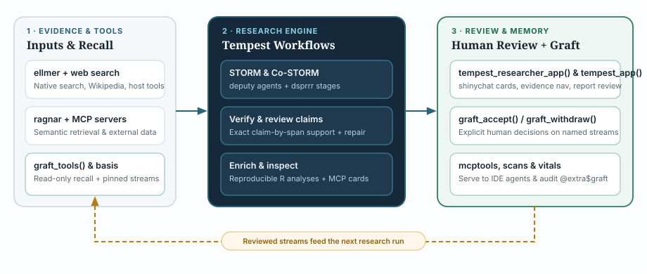

Most AI research tools forget everything the moment a session closes—or dump unreviewed model outputs into a vector database where drafts, outdated numbers, and retracted claims resurface as facts.
Tempest and graft separate those two jobs cleanly:
- Tempest runs provisional research, checks claims against exact source quotes, and writes reports.
-
Graft stores immutable research snapshots, records
explicit human review decisions (
acceptorwithdraw) on named streams, and exposes bounded, read-only recall to future runs, chats, and external MCP clients.

Try the full loop offline
Install the optional packages and launch the bundled offline
demonstration. It runs real deputy, dsprrr,
shinymcp, and graft code with scripted replies
and synthetic sources—no API keys or network requests required:
pak::pak(c(
"JamesHWade/tempest",
"JamesHWade/graft",
"JamesHWade/shinymcp",
"shiny",
"bslib",
"callr"
))
tempest::tempest_app(demo = TRUE)Walk through the five steps in the sidebar:
- Inspect the initial 82% recovery report and its exact source quote in the Research card.
- Confirm review and click Accept reviewed research to record an explicit Graft decision.
- Click Reopen in a fresh R process to verify that a new Co-STORM session recalls the exact accepted evidence.
- Click Research the corrected note to produce a 74% candidate—notice that the accepted 82% result remains active until you review and accept the correction.
- Click Withdraw retained research and try reopening again: reuse is refused while earlier reports and the full decision history stay inspectable.
Set options(tempest.demo_dir = "~/tempest-demo") before
launching if you want the demo store to persist across R sessions.
Connect Graft to Tempest’s apps
Both interactive apps accept an optional graft_store
argument so teams can review findings and build on prior work without
writing glue code.
Researcher app
tempest_researcher_app(
output_dir = "research-reports",
report_library = TRUE,
graft_store = "research-memory",
memory_purpose = "research",
memory_actor = "alice"
)With graft_store configured:
- Every completed run is automatically published to Graft as an unaccepted provisional candidate (its report, sources, claims, spans, and supports are preserved without approving them).
- Open any report to review its evidence, name a stream (or pick an existing stream to record a correction), and click Accept to project memory or Withdraw from active memory.
- The Saved research reports library displays each
report’s live Graft status (
Accepted,Provisional,Superseded,Withdrawn) and lets you filter to accepted reports. - Under Project memory (Graft) in the sidebar, toggle
“Let experts consult reviewed memory” to attach
read-only
graft::graft_tools()to research experts, or pick an accepted stream to compare against.
Co-STORM workspace
# Local file-backed store (safe across processes via advisory file locks)
tempest_app(graft_store = "research-memory")
# Or pass a PostgreSQL ArtifactStore for multi-user deployments
pg_store <- graft::graft_store_postgres(con, scope = "team-battery")
tempest_app(
graft_store = pg_store,
memory_eligible = function(stream) host_user_can_read(current_user, stream)
)In tempest_app():
-
Workspace settings → Project memory (Graft) lets
you toggle read-only memory recall for the moderator and
experts—rendered inline in chat as collapsible
shinychattool-result cards—or pin an accepted stream when starting a new Co-STORM session. - Report → Retain in Graft publishes a completed Co-STORM or STORM report and exposes explicit accept, correct, and withdraw controls alongside decision history.
-
Session record → Run review displays pinned input
selections and any
@extra$graftrecall consultations recorded during the session.
Publish, accept, and reuse in R
The installed offline example exercises the same public functions you
call on a live tempest_run() or published
tempest_session():
library(tempest)
example <- new.env()
sys.source(
system.file("examples", "artifact-research.R", package = "tempest"),
example
)
example$artifact_research_example()
#> $evidence_records
#> [1] 4
#>
#> $historical_report_retained
#> [1] TRUE
#>
#> $unchanged_review_is_distinct
#> [1] TRUE
#>
#> $corrected_selection_is_distinct
#> [1] TRUE
#>
#> $withdrawal_blocks_reuse
#> [1] TRUE
#>
#> $retry_preserves_withdrawal
#> [1] TRUEIn your own script or host application, the cycle takes four calls:
store <- graft::graft_store("research-memory", create = TRUE)
# 1. Publish completed research as an unaccepted candidate
selection <- tempest_publish_artifact_research(result, store)
# 2. Inspect the candidate report and evidence before deciding
candidate <- tempest_read_artifact_research(store, selection)
# 3. Explicitly accept into a named stream (use expected = prior_decision to correct)
decision <- graft::graft_accept(
store,
graft::graft_read_selection(store, selection),
stream = "battery-recycling",
expected = NULL,
key = "review-1",
actor = "analyst",
reason = "Verified claims and primary source spans",
purpose = "research"
)
# 4. Reuse as a pinned basis in a later run
knowledge <- tempest_reuse_artifact_research(
store,
stream = "battery-recycling",
decision = decision@id,
purpose = "research",
eligible = function(event) host_can_consult(event)
)
follow_up <- tempest_run("Battery recycling update", knowledge = knowledge)The eligible callback runs when knowledge
is created and again when a run starts or resumes. If the stream is
later corrected or withdrawn, stale references fail closed rather than
silently consulting outdated claims.
Two ways to consult reviewed memory
Tempest supports two complementary ways to feed reviewed Graft memory into new research:
-
Pinned basis
(
knowledge = tempest_reuse_artifact_research(...)): admits one exact accepted stream’sClaim,ClaimSupport,EvidenceSpan, andSourcerecords as inert evidence. Use this when you want structural change detection—comparing new verified claims against previously accepted ones (as in Build a recurring decision briefing). -
Multi-stream agent recall
(
graft::graft_tools()): gives anellmerordeputyagent two read-only tools—list_project_memoryandrecall_project_memory—bounded bymax_text_bytesand guarded on every call by youreligible(stream)callback:
memory_tools <- graft::graft_tools(
store,
purpose = "research",
eligible = function(stream) host_allows_stream(stream)
)Pairing with ragnar: ragnar finds, graft verifies
When your organization accumulates hundreds of reports, pair
ragnar for broad semantic search with graft
for acceptance verification:
- Index accepted report summaries or claims in a
ragnarstore keyed by their Graftstreamanddecision_id. - Let search locate relevant candidate streams.
- Pass any search hit through
graft::graft_recall()ortempest_reuse_artifact_research()before showing it to a model so withdrawn or superseded findings never re-enter a prompt.
Share over MCP and inspect with scans
Read-only research cards (tempest_mcp_app())
Turn any completed tempest_run() result or published
tempest_session() into a read-only shinymcp
card exposing the report, claim-by-span evidence, and bounded stage
review:
card <- tempest_mcp_app(result)
shinymcp::preview_app(card)
# Or serve in an MCP client:
shinymcp::serve(card)Serve reviewed memory to IDE agents (mcptools)
Because graft::graft_tools() returns standard read-only
ellmer::ToolDef objects with no model-controlled store
handles, you can expose your team’s accepted Tempest research directly
to Claude Code, Positron, or Posit Assistant:
library(graft)
store <- graft_store("/path/to/research-memory")
tools <- graft_tools(
store,
purpose = "research",
eligible = function(stream) TRUE
)
mcptools::mcp_server(tools = tools, session_tools = FALSE)Audit runs and consultations with scans
Every graft_tool() and graft_tools() call
attaches plain-data provenance under @extra$graft
(status, stream, purpose,
decision_id, selection_id, artifact counts,
and truncation flags—never live store handles or raw content). Alongside
tempest_trajectory_review(), this lets scans
inspect both how a run executed and which reviewed streams it
consulted:
review <- tempest_trajectory_review(
result,
store = store,
selection = selection,
stream = "battery-recycling",
decision = decision@id
)
# Export plain validated data for scans
review_data <- tempest_trajectory_review_data(review)